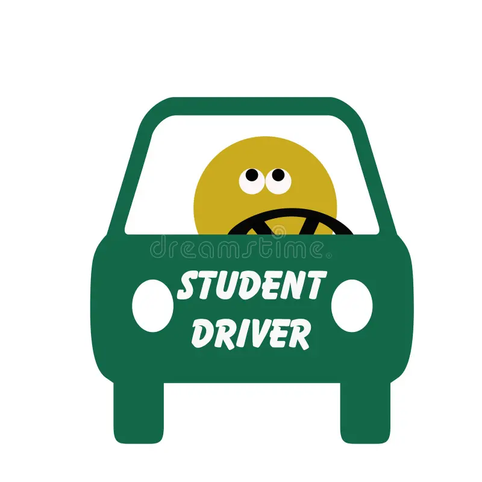
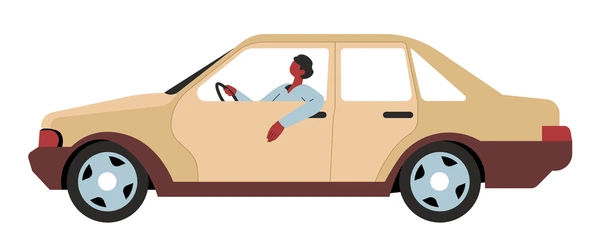

So What is Teen Driving?
Teen driving involves young individuals, typically aged 16-19, acquiring the skills and responsibility to operate a vehicle. It is a significant milestone that comes with both opportunities and challenges, requiring a comprehensive understanding of road safety and regulations.
Facts and Benefits of Teen Driving
- Teen drivers gain independence and responsibility.
- Learning to drive enhances decision-making skills.
- Driving provides access to more opportunities, like jobs and education.
- Teens contribute to the economy as new drivers.
- Early driving experience can lead to safer driving habits in adulthood.
Negative Facts and Warnings

Higher risk of accidents due to inexperience.

Distracted driving is a major concern.
Teens often underestimate driving hazards.

Understanding Teen Crash Risks
Teen drivers face unique risks and challenges on the road, including peer pressure and lack of experience. Addressing these issues through education and policy can significantly reduce crash rates and improve safety for all road users.